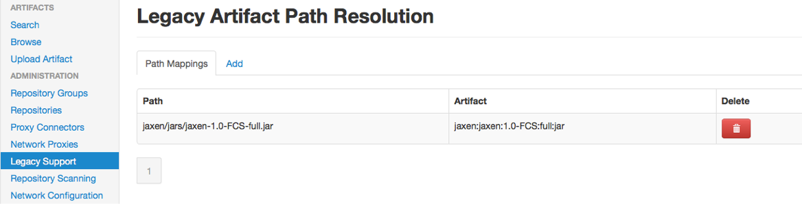
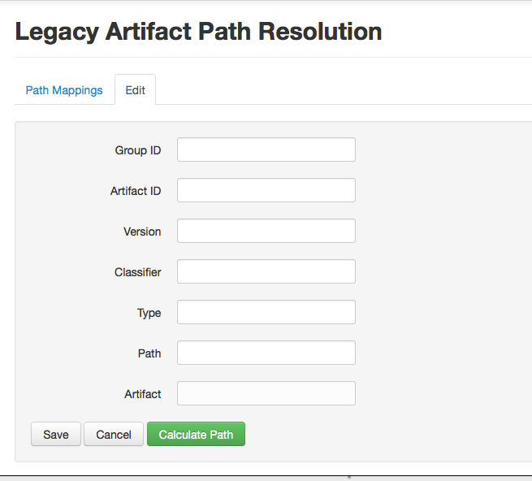

Apache Archiva legacy repository support configuration
Archiva supports both Maven 1 and Maven 2 clients transparently when used as a proxy. The underlying managed repository can use either the default or legacy layout, and Archiva will convert the requested path to the expected internal format.
However, due to the lack of structure in maven 1 "legacy" artifact request format, Archiva must split the request path to discover artifactId, version and classifier - and this is not always deterministic. The strategy used by Archiva has been tested on many existing artifacts in the public central repository, but users may require support for private artifacts or for artifacts with classifiers.
Since version 1.0.1, Archiva provides a legacy support configuration to the administrator. It is possible to register some custom legacy path and the expected artifact reference. Archiva will check that the entered artifact reference matches the legacy path, to avoid corrupted data in repository.
For example:
- Path: jaxen/jars/jaxen-1.0-FCS-full.jar
- Group ID: jaxen
- Artifact ID: jaxen
- Version: 1.0-FCS
- Classifier: full
- Type: jar
This prevents the artifact incorrectly getting translated to a version of 1.0 and a classifier of FCS-full.
Those custom legacy path are stored in the archiva.xml configuration file. By default, jaxen-1.0-FCS-full is registered, as it is used by some core Maven 1 plugins (however this is not the case if you upgraded from a previous version and retained your configuration file).
